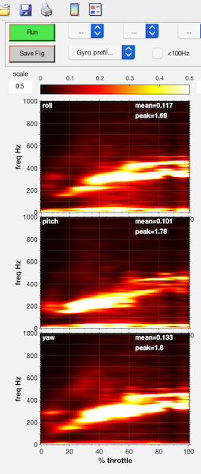
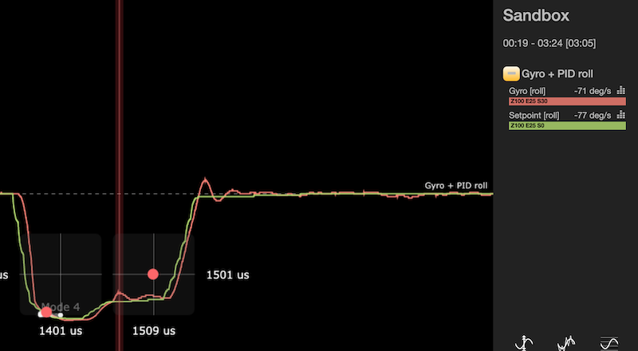
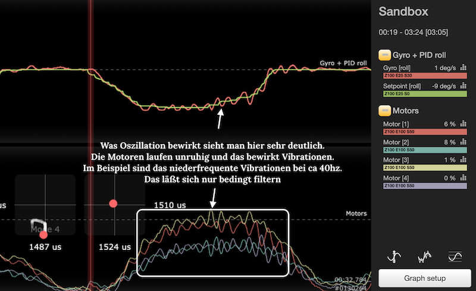
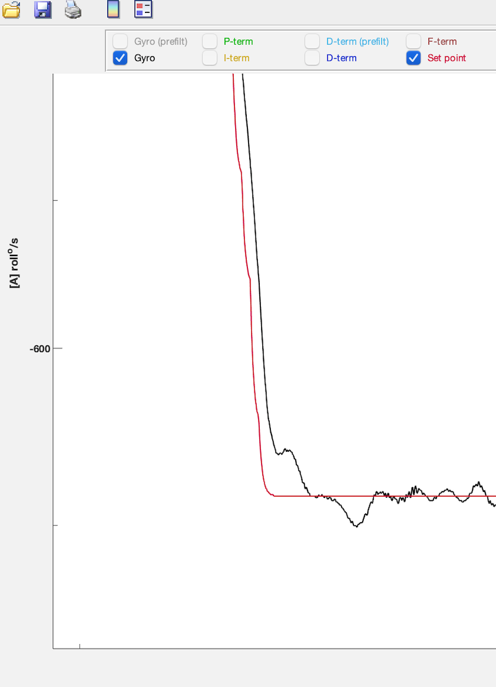
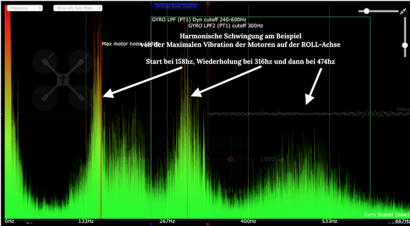
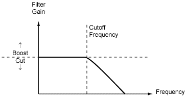
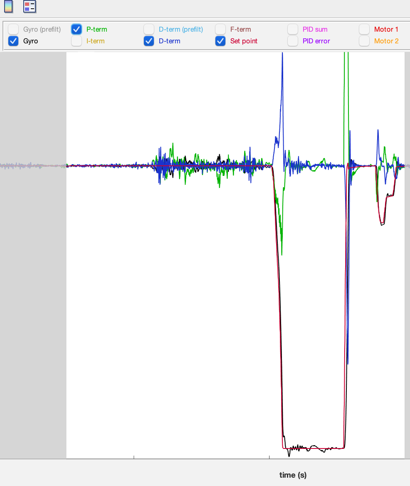
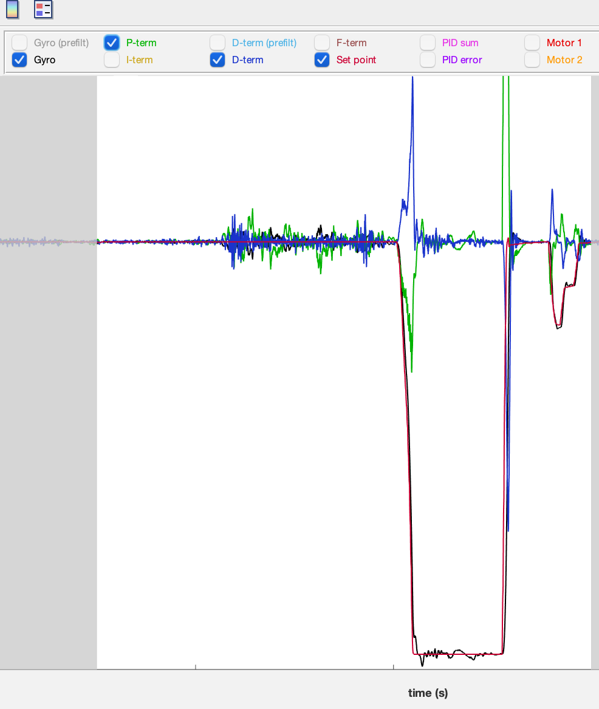

FILTER Ein mal Eins #
Inhaltsverzeichnis #
{{TOC}}
Historie #
| Version | Datum | Inhalt |
|---|---|---|
| 0.1 | August 2020 | initial |
Allgemeines #
Typische Frequenzen #
Vibrationen die am Copter auftreten lassen sich in verschiede Frequenzbereiche unterteilen
- 0 ~ 20Hz: normaler Frequenzbereich während des Fliegens (keine Filterung der Signale)
- 20 ~ 80Hz: Vibrationen niedriger Frequenz (häufig Propwash)
-
80 ~ 1000Hz: hochfrequente Vibrationen (Noise) verursacht durch
- Motorvibrationen & Prop-Resonanzen. Hier sieht man auch das typische Bild des Motor-Vibrations-Bandes Harmonics
- Frame-Resonanzen
- ...
Noise / Vibrationen #
Ist eine Bezeichnung für Rauschen bzw. Gyro-Signale die nicht zu den gewünschten/benötigten Signalen sind, die durch den FC verarbeitet werden müssen. Dies entspricht demnach Messwerten, die irregulär sind und die Performance des Copters negativ beeinflussen.
Noise (Rauschen) kann ausgelöst werden durch:
- äußere Einflüsse (z.B. Wind, Kontakte mit Ästen, ...)
- Vibrationen am Chassis (z.B. lose schrauben, dünne schwingende Arme, ...)
- Vibrationen durch Motoren(z.B. Lagerschäden, Unwucht, ...)
- Vibrationen durch Props (z.B. Unwucht, Prop-Wash, ...)
- Kombinationen aus allem •.
Noise wird durch den Gyro und anschließend durch den PID- Controller verarbeitet und kann zu fehlerhaften Verhalten führen.
Eingesetzte Filter LPF 5 , NOTCH 4 , RPM 1 , DTerm 6 versuchen dieses Rauschen zu eliminieren.
Eine Deiner Hauptaufgabe beim Tunen Deines Copters ist, dass du diese Vibrationen in den Griff bekommst ohne deutliche Delay zu bekommen.

Hinweis
Der DTerm-Anteil des PID-Controllers verstärkt Vibrationen deutlich. Daher ist eine Abstimmung der Filter mit dem DTerm 6 gut abzustimmen.
Um Vibrationen zu analysieren musst du eine Blackbox-Analyse durchführen oder Tools wie
Blackbox-Explorer
,
PIDToolbox
oder
Plasmatree
verwenden.
Um einen ersten Eindruck von Vibrationen zu erhalten empfehle ich eine Spektral-Analyse . Hier sieht man sehr deutlich in welchem Frequenzband Vibrationen an Deinem Copter auftreten.
Filter helfen, diese Vibrationen möglichst aus den Signalen für den Flight-Controller herauszufiltern um anschließend den Motoren möglichst saubere Signale zu übermitteln.
Tip
Bevor du damit startetest die PID-Werte anzupassen, stelle Deine Filter optimal auf Deinen Copter ein. Erst dann fängst du mit den PID-Werten an. Versuche durch Deine Filter ein maximales Gyro & DTerm Delay von <5ms zu erreichen. Du kannst das sehr einfach mit
PIDToolbox
erkennen.
Oszillation #
Eine Oszillation ist eine Schwingung. In Bezug auf den PID-Controller ist es ein Über- und Unterschwingen zur Ideallinie.

- SetPoint = SOLL-Wert = gestrichelte Linie (das ist das RC-Kommando z.B. 700deg/sec)
-
Orangene-Linie ein Versuch sich möglichst schnell an den Soll-Wert heranzutasten. Man überschießt den Soll-Wert korrigiert und fällt unter den Soll-Wert, korrigiert dann wieder überschießt man usw. bis man irgendwann den Sollwert Erreicht.
-
Ideal ist es, wenn man die grüne Linie ) möglichst schnell ohne bzw. geringer Oszillation den Sollwert erreicht
-
Blauer Bereich Schafft es der PID-Controller überhaupt nicht den Soll-Wert zu erreichen dann bewegt man sich in diesem Bereich. Schnelles Oszillieren wird als Vibration empfunden.
Nachfolgend ein Bild aus dem Blackbox-Explorer bei dem man sehr deutlich diese Oszillation sehen kann

Im nachfolgenden Bild sieht man im oberen Graphen die Oszillation auf der Roll-Achse und welche Auswirkungen diese auf die Motoren haben. Dies läßt sich nur bedingt durch Filter bereinigen, sondern über die PID-Einstellungen. 
Nachfolgende Bildfolge zeigt die obigen beschriebenen Vibrationen der Motoren bei einem Punch. Analyse über PIDToolbox[^PDT]
|
Roll
|
Info |
|---|---|

|
Diese Ansicht zeigt den Verlauf kurz vor einer Snap-Roll. Der obere Graph zeigt die Roll-Achse. Der untere Graph zeigt zeitgleich Throttle. Man sieht auch, das ich meine Roll-Rates auf 700deg/sec stehen |
| Dieser Graph zeigt Details der Roll-Daten. Die schwarze Linie entspricht den Gyro-Daten, die rote Linie ist der Setpoint, die grün Line zeigt den PTerm und die blaue Linie den DTerm. Hier sieht man das PTerm und DTerm gegenläufig arbeiten. Weiterhin erkennt man am die Oszillation des Gyros beim Erreichen des Setpoints. | |
|  | Nun eine noch genauere Darstellung der Roll-Daten beim Erreichen des Setpoints. Deutliche Oszillation des Gypros was darauf hindeutet, dass der PID-Controller noch nicht optimiert ist. |

|
Hier nun die Motordaten kurz bei Full-Throttle am Beispiel von Motor 1. Schwarze Linie ist Throttle, rote Linie ist Motor1. Die Vibrationen die man vor der Snap-Roll im Bild 2 deutlich sieht, sieht man auch hier in den Motordaten. Diese Motor-Signale können zu den Vibrationen führen und auch zur Motor-Überhizung. Wichtig ist, das man die Motor-Temperatur nach einem Flug überprüft - erst recht, wenn man versucht seinen Copter zu tunen. Zwischen Throttle reduzieren und Beginn der Snap-Roll liegen ca. 500ms |
Harmonics #
Harmonics oder Harmonische sind wiederkehrende Amplituden (Vibrationen) in den gleichen Frequenzabständen.
Das nachfolgende Bild zeigt deutlich drei sich im gleichen Abstand wiederholende Frequenz-Peaks von Vibrationen (Motor Vibrationen)
Beginnend mit dem Motor-Noise-Peak bei 158hz, dann die erste Harmonische Amplitude bei 316hz (2x158hz) und die dritte Amplitude bei 474hz (3x158).

Gyro-Data-Filtering #
Signal & Prozessfluß zur Filterung
Grundlage Filter-Arten #
Lowpass-Filter #
Niedrige Frequenzen werden durch den Filter durchgelassen, hohe Frequenzen werden gedämpft.
Hohe Frequenzen sind in der Regel im System nur Rauschen bzw. Vibrationen und werden für die Flugdaten nicht benötigt, daher versucht man sie herauszufiltern.
Mit dem LPF
5
wird eine Grenzfrequenz (
cutoff
) angelegt und der FC reduziert die Signale die oberhalb dieser Grenzfrequenz liegen.
Die Dämpfungskurve ist eine Steigung. d.h. je höher die Signalfrequenz desto stärker die Dämpfung

Für den Einsatzbereich des Quadcopters ist der Frequenzbereich von 0-80Hz relevant, alles darüber sollte möglichst effizient weg gefiltert werden.
Beachten
Ein fundamentaler Aspekt ist, je niedriger der die Grenzfrequenz (
cutoff frequency
) für den Lowpass Filter ist - umso mehr muss gefiltert werden. Das wirkt sich auf dem Gesamtperformance aus. Daher gibt es mehrere andere Filter, die andere Algorithmen verwenden und das System effizienter gestalten.
Notch-Filter #
Notch-Filter 4 eigenen sich hervorragend zur Unterdrückung von Rauschen in einem sehr spezifischen Frequenzband.
Notch-Filter sind in der Regel effektiver zur Reduzierung von Motorrauschen als LPF- Filter aber ggf. müssen manuelle Abstimmungen durchgeführt werden um die Bandbreite und die Mittenfrequenz zu bestimmen (Notch=Kerbe)
Weiterhin können Notch-Filter zur Reduzierung von Propwash genutzt werden.

Der
Q-Faktor
(Quality-Factor) gibt die Güte des Notch-Filters an und beschreibt die Weite des Filters. Je größer der Q-Faktor, desto schmaler der Notch-Filter.
Beispiel
Du stellst fest, dass eine Vibrationsspitze bei ca 260Hz auftritt (z.B. hervorgerufen durch Propwash), dann kann der Notch-Filter
cutoff
bei ca. 200Hz beginnen und bei 300Hz enden. Der Peak soll in der Mitte des Notch-Filters liegen, somit werden auch Frequenzen etwas unter und über dieses Peaks gefiltert.
Static-Filter #
Im Rahmen von Betaflight werden statische Filter als LowPass-Filter oder als Notch-Filter genutzt
Dynamic-Filter #
Dynamic Filter reduzieren ebenfalls Rauschen, vorausgesetzt die entsprechenden Parameter richtig eingestellt sind. Schwingungen, Motorgeräusche, etc. können durch die Dynamic-Filter reduziert werden.
Ein Dynamic-Filter ist ein Algorithmus, der die Frequenz des Rauschens erkennen kann und er kann den Notch-Filter verwenden, um ihn automatisch zu reduzieren.
Nachteil
von Dynamic-Filters ist die Erhöhung der CPU-Last und die Delays.
Betaflight-Filter #
RPM-Filter #
RPM-Filter 1 sind eine besondere Filtertechnik in Betaflight und wurden mit BF 4.0 eingeführt. Die RPM-Filter können über eine Vielzahl an Parameter 2 konfiguriert werden. Eine detaillierte Beschreibung findet man im BF-Wiki BF-RPMFilter .
RPM-Filter basieren auf mehreren
Notch-Filter
die präzise darauf ausgerichtet sind Motorvibrationen und ihre
Harmonics
zu filtern und möglichst komplett zu elimenieren. Für jeden Motor können bis zu drei Notch-Filter (max 3 Harmonics) generiert werden (Pro Achse). Das heißt insgesamt steht eine Bank von 36 Notch-Filtern zur Verfügung. 3 Achsen * 3
Harmonics
* 4 Motoren = 36 Notch-Filter.
Die RPM-Filter basieren auf die Drehzahl der Motoren und dem bidrektionalen DShot-Protokoll in Zusammenspiel mit den Gyrodaten - daher auch
Gyro-RPM-Filter
Wichtig
RPM-Filter benötigen für BLHeli32 ESC die aktuellste Firmware
>= 32.7
. Für BLHeli_S ESCs empfehle ich die FW von (auch wenn sie Geld kosten) JFlight
3
Tip
Durch die Einführung der RPM-Filter ist es möglich andere Filter (z.B. LPF) zu reduzieren bzw. komplett auszuschalten, dies geht zu Gunsten der Gesamtperformance des Copters und die Delays können dadurch weiter reduziert werden.
BF - Dynamic-Lowpassfilter #
Neu ab [BF 4.0 - DLPF] (https://github.com/betaflight/betaflight/wiki/4.0-Tuning-Notes#Dynamic-lowpass-filtering). BF bietet nun die Möglichkeit, die Grenzfrequenz des LPF 5 bei Vollgas im Vergleich zu 0-Throttle sanft auf einen höheren Wert zu verschieben. Die dem ersten Gyro und dem D-Lowpass-Filter zugewiesene Grenzfrequenz steigt nun dynamisch mit zunehmender Drosselung entlang einer Kurve an, die effektiv die Motordrehzahl beeinflusst. Dadurch wird die Verzögerung bei Vollgas verringert, und der Dynamische-Notch Filter 4 kann die Motor-Vibrations-Peaks besser verfolgen.
BF - Static Notchfilter #
Statische Notchfilter werden explizit mit der Center-Frequenz auf auf die Herzzahl der höchsten Vibrationen (Peak) gesetzt. In BF kann man zwei dieser Notch-Filter aktivieren. Angegeben werden jeweils die cutoff-Frequenz und die Center-Frequenz.
BF - Dynamic-Notchfilter #
Ab
BF 3.1
kann man auch
Dynamic Notch Filter
4
einsetzen. Dieser hocheffiziente Dynamische Notch-Filter setzt sich automatisch auf den Motor-Peak - also den aktuelle höchste Frequenz der Motor-Vibrationen, basieren auf die jeweils aktuelle FFT-Analyse. Hierdurch wirkt dieser Notch-Filter in allen Throttle-Stellungen und wandert demnach durch das Frequenzband.
Dynamische Notch-Filter haben eine geringere Latenzzeit als LP-Filter. Notch-Filter sind sehr effektiv und bei einer guten Abstimmung kann man sogar auf LPF-Filter verzichten. Dadurch steigert sich die Gesamtperformance des Copters.
LP-Filter aber einfach abschalten sollte wirklich mit bedacht gemacht werden.
Der Dyn-Notch-Filter ist per default eingeschaltet.
Es gibt zwei Notch-Filter für den GYRO. Einer oder beide können bei Bedarf abgestellt werden.
Default-Values sind auf 200Hz-400Hz. Diese Grenzfrequenzen arbeiten sehr gut und funktionieren bei den meisten Coptern.
Für eine Feinabstimmung ist es notwendig eine Blackbox- Auswertung durchzuführen (Blackbox-Explorer, PIDToolbox, Plasmatree)
BF - Static-Lowpassfilter #
In Betaflight wird zwischen zwei Static-LPF Filtern unterschieden
- PT1
- BIQUAD
Um einen LPF-Filter zu nutzen muss grundsätzlich die untere Grenzfrequenz (
cutoff
)) angegeben werden. Der Filter beginnt dann ab dieser Frequenz zu arbeiten. Die Cutoff-Frequenz sollte
nicht
unter 80Hz liegen, da hier die normalen Flugfrequenzen liegen.
PT1 #
Dieser Filter hat eine etwas sanftere Kurve und ist ein LPF-Filter 1. Ordnung und hat dadurch eine geringere Latenzzeit. Der Nachteil dieses Filters, er filtert nicht so stark Vibrationen aus dem Signal (bedingt durch seine Kurvenausprägung)
Tip
verwende für den ersten LPF-Filter die Einstellung PT1 , denn er ist der schnellere Filter.
BIQUAD #
Dieser Filter hat eine deutliche steilere Kurve und filtert besser als ein PT1. Er ist ein Filter 2. Ordnung. Dadurch ist die Latenzzeit schlechter, das Filterergebniss besser.
BF - Gyro-RPM-Filter #
Ein mächtiges neues Feature, das mit BF 4.0 eingeführt wurde und in den nachfolgenden Releasen weiter verbessert wurde. Die RPM Filter wurden weiter oben schon beschrieben, nachfolgend eine Reihe von Detailinformationen.
Siehe auch die dazugehörigen Parameter
BF - Gyro-LowPass Filter #
BF - DTerm LowPass Filter #
Der DTerm verstärkt alles - auch Vibrationssignale - somit können ungefilterte DTerm Werte die direkt zu den Motoren gesendet werden dazu führen, dass die Motoren heiß werden oder sogar überhitzen und zerstört werden.
Hier kommen jetzt die DTerm-Lowpass Filter -> Einstellung wie bei den Static-Lowpassfilter
Allgemeinen ist ein Biquad-Filter das sinnvolle Minimum an Filterung mit einer Frequenz um 100 Hz bis hinunter zu 80 Hz, wenn man heiße Motoren hat.
Beachten
Den DTERM-LPF solltet ihr grundsätzlich nicht in Eurem Setup entfernen!
Appendix #
Bilder in größerem Format #
 
